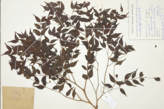

Images :



| Habit : | Shrubs or small tree . |
| Leaves : | Leaves simple , opposite , decussate ; petiole 0.2-0.4 cm long, canaliculate , glabrous ; lamina 3.5-6.7 x 1-2.2 cm, ovate-lanceolate , apex caudate , sometimes narrowly acuminate with blunt tip, base acute , margin entire , coriaceous , glabrous ; midrib slightly canaliculate with intramarginal_nerve ; secondary and tertiary_nerves obscure . |
| Inflorescence / Flower : | Flowers in 3-flowered cymes , axillary ; pedicels filiform ; petals pale blue. |
| Fruit and Seed : | Berry , globose ; seed 1. |